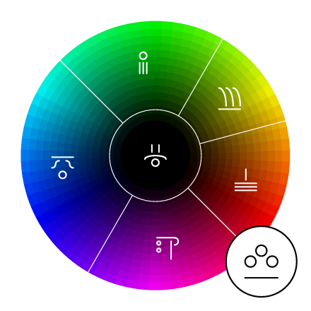
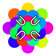
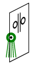
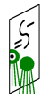

The words for colors in Rikchik are M aspects of morphemes for things that tend to be of that color. (Not all morphemes can be treated this way - Bouncer-M is "fast", not "bouncer-colored".)
 The primary color words and some of the English color words they overlap with are these:
For example, Sun-M-Quality-0 Home-P-End-1 (as seen to the left) could be translated as "white house".
For more precisely specifying colors, color words may modify each other (as in English "light green" or "reddish purple" - Sun-M-Quality-0 Rikchik-M-End-1 and Ground-M-Quality-0 Fruit-M-End-1 respectively, as seen to the right).
|  |
In addition, there are these words that can also be considered colors:
You can download a PDF diagram of just the color symbols from this page.